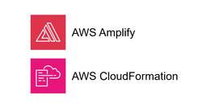
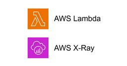
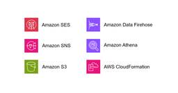
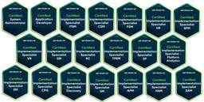
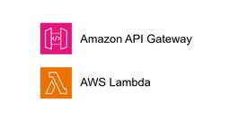
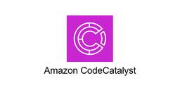

TechHarmony
https://blog.usize-tech.com
TechHarmonyは、SCSK株式会社が運営するエンジニアブログです。SCSKのエンジニア自らがクラウドを中心としたナレッジを積極的にアウトプットすることで社会への還元を行うとともに、更なるスキルアップを目指します。
フィード

AWS Amplify に AWS CloudFormation でカスタムドメイン (Zone Apex) を設定する
TechHarmony
本記事は TechHarmony Advent Calendar 2024 12/21付の記事です。 こんにちは、広野です。 AWS Amplify は以前はカスタムドメインに Zone Apex を設定できなかった記憶 […]
5時間前

AWS Lambda でパフォーマンスチューニングの為に AWS X-Ray を手軽に使ってみよう
TechHarmony
はじめに システムを構築していると、パフォーマンスチューニングの必要な状況に直面することはかなり多いと思います。ただ、パフォーマンスチューニングを行うにはどの処理で何秒かかっているのかを測定して、ボトルネックとなっている […]
20時間前

新米エンジニアが挑む！Snowflake CortexAIでドキュメント検索アシスタントを構築してみる【チャットボットバージョン】
TechHarmony
本記事は 新人ブログマラソン2024 の記事です。 皆さんこんにちは！入社して間もない新米エンジニアの佐々木です。 前回は、Snowflake CortexAIを使ってドキュメント検索アシスタントを構築するチュートリアル […]
1日前
AWS Step Functions のタイムアウト設定について理解する
TechHarmony
本記事は TechHarmony Advent Calendar 2024 12/19付の記事です。 皆さんこんにちは。UGです。 忙しくない日だからと資格試験を申し込んだ25日がクリスマスであることを上司に指摘されて思 […]
1日前

Amazon SES の送信ログを取得・通知する [AWS CloudFormation 利用]
TechHarmony
本記事は、Japan AWS Ambassador Advent Calendar 2024 の 2024/12/20 付記事です。 こんにちは、広野です。 最近、社内でメールに DKIM 署名をする対応をしてまして、そ […]
1日前
【Amazon Bedrock】使い終わったカスタムモデルは削除しましょう
TechHarmony
本記事は TechHarmony Advent Calendar 2024 12/19付の記事です。 こんにちは。ヒエログリファー Masedatiです。 はじめに、私からお伝えしたいことがございます。 はじめに 申し訳 […]
2日前

ServiceNowメインライン資格全冠(20冠)体験記～ServiceNowをもっとよく知りたい
TechHarmony
本記事は TechHarmony Advent Calendar 2024 12/18付の記事です。 本投稿は、「TechHarmony Advent Calendar 2024」に加えて、 「ServiceNow アド […]
3日前

AWS Lambdaプロキシ統合の利用有無による入出力の違いについて (Amazon API Gateway ＋ AWS Lambda)
TechHarmony
本記事は TechHarmony Advent Calendar 2024 12/17付の記事です。 どうもSCSK齋藤です。 今回は Amazon API Gateway と AWS Lambda を結びつけた際の、L […]
4日前

「Zabbix Conference Japan 2024 パートナーミーティング」で、 Partner of the Year 2024 を受賞
TechHarmony
こんにちは、SCSK株式会社の谷川です。 このたび、SCSKはZabbix のパートナーミーティングでPartner of the Year 2024を受賞致しました！！ 「Zabbix Conference Japan […]
5日前

Catoクラウド 2025年の価格改定（Pricing Update）について
TechHarmony
Catoクラウドの2025年2月より適用される価格改定および新製品について解説しています。 本記事内で、実際のCatoクラウド価格についての記載はございません。 はじめに 今回の価格改定については、昨年同様 […]
5日前
Zabbix7.0の性能限界を調査してみた
TechHarmony
本記事は TechHarmony Advent Calendar 2024 12/16付の記事です。 こんにちは。SCSKの上田です。 今回は、2024年6月にリリースされたZabbix7.0の性能限界を調査し […]
5日前

Amazon CodeCatalyst で Terraform を使用する
TechHarmony
こんにちは、稲葉です。 Amazon CodeCatalystでTerraformを使用する方法を学習したのでご紹介いたします。 構築する環境 Amazon CodeCatalystで以下のようなパイプラインを作成します […]
6日前
【Catoクラウド】ADからユーザをプロビジョニングしてみた
TechHarmony
本記事は TechHarmony Advent Calendar 2024 12/14付の記事です。 こんにちは。SCSKの中山です。 今回はアドベントカレンダー企画ということで、ネタに困ってしまったので、ずっと放置して […]
7日前

Amazon SESでDMARC対応した会社メールアドレスを使うには
TechHarmony
SCSK 永見です。 私が管理しているAWS環境では、aws health aware ( https://github.com/aws-samples/aws-health-aware )で、health eventを […]
8日前
【Amazon Athena】Athena初心者のための基礎知識と基本操作
TechHarmony
こんにちは。SCSK池宮です。 今さらながら、先日Athenaデビューしました。 初心者にも非常に扱いやすいサービスですが、私と同じように「いざコンソールに入るとどこから始めていいか…」と悩んでしまう方向けに基本操作をま […]
8日前
Catoクラウドにおけるセキュリティ監視について
TechHarmony
本記事は TechHarmony Advent Calendar 2024 12/13付の記事です。 SCSK 技術ブログ「TechHarmony」で今年も12月1日から25日までのアドベントカレンダー企画が開催されてお […]
8日前
Storage Browser for Amazon S3 のアクセスログを取得・検索する [AWS CloudTrail 利用]
TechHarmony
こんにちは、広野です。 以下の記事で、Storage Browser for Amazon S3 の実装方法を紹介しました。 【re:Invent 2024 発表】Storage Browser for Amazon S […]
8日前
Storage Browser for Amazon S3 でダウンロードを無効にする
TechHarmony
こんにちは、広野です。 以下の記事で、Storage Browser for Amazon S3 の実装方法を紹介しました。 【re:Invent 2024 発表】Storage Browser for Amazon S […]
9日前
CatoクラウドのCLIやTerraformプロバイダが公開されました！
TechHarmony
本記事は TechHarmony Advent Calendar 2024 12/12付の記事です。 2024年11月18日のCatoクラウドのアップデート情報 にて、Catoクラウドの管理操作や設定作業に利用できるツー […]
9日前
【AWS】ベストプラクティスに準拠してアクセスキーを利用したい
TechHarmony
こんにちは。SCSK渡辺(大)です。 人生初のIDEとしてCloud9を使っていたのですが、とある理由からVisual Studio Codeを使いたくなりました。 Visual Studio CodeからAWSリソース […]
10日前
【Catoクラウド】Linux OSでConnect on bootを使用せず自動接続を試してみた
TechHarmony
本記事は TechHarmony Advent Calendar 2024 12/11付の記事です。 以前、LinuxOSにて自動接続できる方法はないかといったお問い合わせがありました。 結論、CatoのサービスではLi […]
10日前
【re:Invent 2024 発表】AWS PrivateLink (Resource Endpoint) を経由したRDSへのアクセス
TechHarmony
こんにちは、SCSKでAWSの内製化支援『テクニカルエスコートサービス』を担当している貝塚です。 ある案件で、PrivateLink経由でRDSエンドポイントに接続したいという要件がありました。 RDSエンドポイントのI […]
11日前
【Catoクラウド】App Analyticsの見方解説
TechHarmony
Catoクラウドに関するお問合せとして、「特定の拠点でどの端末が最も多く通信をしているのか？」や「拠点に負荷をかけている通信は何か？」といった質問をいただくことがあります。 これらの課題を解決できるダッシュボードツールと […]
11日前
【re:Invent 2024 発表】Storage Browser for Amazon S3 を React アプリに組み込みました
TechHarmony
本記事は、Japan AWS Ambassador Advent Calendar 2024 の 2024/12/9 付記事です。 こんにちは、広野です。 2024年の re:Invent で、アプリから Amazon […]
12日前
Socketが定期的にGoogle.com宛にPingしている理由～Synthetic Monitoringの紹介～
TechHarmony
本記事は TechHarmony Advent Calendar 2024 12/9付の記事です。 どうも、Catoクラウドを担当している佐々木です。 Catoクラウドを利用しているユーザーから、以下のような問い合わせを […]
12日前
【Catoクラウド】管理者向け Catoの通知まとめ記事
TechHarmony
本記事は TechHarmony Advent Calendar 2024 12/8付の記事です。 Catoクラウドの管理者の皆様には、日々様々な通知が届いていませんか？ 今回はCatoクラウドの通知機能についてまとめて […]
13日前
【Catoクラウド】2024年のCatoに関するアップデート情報総まとめ
TechHarmony
本記事は TechHarmony Advent Calendar 2024 12/7付の記事です。 こんにちは、Catoクラウド担当SEの中川です。 本記事では、年末ということで、2024年のCatoに関する、価格改定な […]
14日前
【Catoクラウド】新オプション! Digital Experience Monitoring はここがすごい!
TechHarmony
本記事は TechHarmony Advent Calendar 2024 12/6付の記事です。 本記事では、2024年11月3日にリリースされた、Catoクラウドの新しいオプションである「Digital Experi […]
15日前
CatoクラウドのCMAがリニューアルされます！
TechHarmony
この度、4年ぶり位にCato Management Application（CMA）がリニューアルされます！ リニューアルと言うと大袈裟かもしれませんが、メニュー構成の変更により特定のサービスやコンテンツの配置が変わって […]
16日前
【re:Invent 2024発表】次世代 Amazon SageMaker Unified Studio に触ってみた
TechHarmony
どうも。みなさん re:Invent 2024 楽しんでますか? 寺内は東京にいます。 とはいえ、AWSからの大量のNews情報はキャッチできますので、見ていると興味深いキーワードが。 the next generati […]
17日前
クラウドにおけるデータセキュリティ強化の鍵！DSPMとは何か、導入のメリットと具体的な活用法を解説
TechHarmony
みなさんこんにちは。 クラウド環境の利用が拡大する中で、最も重要な課題の一つがデータセキュリティです。クラウドには膨大なデータが保存されていますが、その中には機密情報や規制対象データが含まれていることも少なくありません。 […]
17日前
クラウド権限管理の強化を目指すCIEMとは？導入のメリットと具体的なポイントを解説
TechHarmony
クラウドの普及が進む中、セキュリティ対策の重要性が高まっています。その中でも特に課題として挙げられるのが、クラウド環境における権限管理の複雑化です。多くの企業で、権限の設定ミスや適切でないアクセス許可が原因でセキュリティ […]
17日前
クラウド上のワークロードを守るCWPPとは？基本的な機能と導入メリットを解説
TechHarmony
クラウド環境が普及する中で、アプリケーションやコンテナ、仮想マシンなどのワークロードをどのように保護するかが重要な課題となっています。こうした課題を解決するために注目されているのが、CWPP（Cloud Workload […]
17日前
クラウドのセキュリティ対策を強化するCSPMとは？導入のポイントを解説
TechHarmony
みなさんこんにちは。 近年、クラウドサービスを利用する企業が急増しています。その一方で、クラウド環境におけるセキュリティ対策が課題となるケースも増えています。そこで注目されているのがCSPM（Cloud Security […]
17日前
新米エンジニアが挑む！Snowflake CortexAIでドキュメント検索アシスタントを構築してみる
TechHarmony
本記事は 新人ブログマラソン2024 の記事です。 皆さんこんにちは！入社して間もない新米エンジニアの佐々木です。 最近、実務でAWSやSnowflakeを用いたデータ活用基盤の構築に携わっており、日々新しい技術に触れる […]
17日前
LangGraphとVertex AI Geminiを使って、AI Agentのreflectionを試してみる
TechHarmony
本記事は TechHarmony Advent Calendar 2024 12/4付の記事です。 こんにちは！SCSKの江木です。 現在AI業界でAI Agentがかなり流行っていますが、皆さんご存知でしょうか？端的に […]
17日前
AWSの情報の調べ方
TechHarmony
本記事は TechHarmony Advent Calendar 2024 12/3付の記事です。 はじめに AWSを利用していると、いろいろと知りたいことが出てきます。こんなことができないの？ こういうときはどうするの […]
18日前
【CWPP】Prisma Cloud Container Defenderのアーキテクチャ
TechHarmony
本記事は TechHarmony Advent Calendar 2024 12/2付の記事です。 みなさんこんにちは。 本ブログでは、Prisma Cloudを用いたサービス開発や運営の中で得た知見や、使いこなし方を共 […]
19日前
Amazon ECS でソフトウェアバージョンの一貫性を自由に設定できるようになりました[Amazon ECS + AWS CloudFormation]
TechHarmony
本記事は TechHarmony Advent Calendar 2024 12/1付の記事です。 こんにちは。SCSKのふくちーぬです。本記事がアップされる頃には、成田空港を出発して、ラスベガスに向かっていることでしょ […]
20日前
「Amazon CodeCatalyst × TaskCat × Amazon Q」で AWS CloudFormation テンプレートの快適な開発環境を作る
TechHarmony
こんにちは。ひるたんぬです。 最近は気温差が激しく、体調を崩しやすいですね。。私もこのビッグウェーブにしっかりと乗り、体調を崩しておりました。 そんなあるとき、ふと気になることがありました。 「なぜ、ティッシュは必ず二枚 […]
22日前
【緊急】Zabbix の脆弱性情報 CVE-2024-42327 (CVSS 9.9)
TechHarmony
こんにちは。SCSK株式会社の上田です。 Zabbixに関する、深刻な脆弱性が発表されました。 この脆弱性は、Zabbixのバージョン6.0.31、6.4.16、および7.0.0までのバージョンに影響します。 Zabbi […]
22日前
【Catoクラウド】AzureのvSocketが2ポート対応した件
TechHarmony
こんにちは。SCSKの中山です。 10月にAzureのvSocketが2ポート対応したので、今回は実際に2NIC VMを作成しつつ、既にAzureでvSocketを利用している方向けに移行する際のポイントを […]
22日前
【CSPM】Prisma CloudのApplication Security機能でAWS CodeCommitに接続してみた
TechHarmony
はじめに Prisma Cloudのアプリケーションセキュリティ機能でAWS CodeCommit上のコードを接続する手順を解説します。 Application Securityとは Application Securi […]
22日前
AWS Control Tower のリージョン拒否でアカウントを統制する
TechHarmony
本記事ではAWS Control Towerのリージョン拒否設定について解説します。 AWS Control Towerの概要 AWS Control Towerは、AWSにおけるマルチアカウント環境を簡単にセットアップ […]
25日前
TerraformによるGoogle Cloud環境構築
TechHarmony
本記事では、Infrastructure as Code（IaC）ツールのTerraformを使ってGoogle Cloud環境を構築する手順を、セットアップ方法から解説します。 Google Cloudには公式のIaC […]
1ヶ月前
【Catoクラウド】YouTubeに関するトラブルシューティング
TechHarmony
こんにちは、Catoクラウド担当SEの中川です。 Catoクラウドを利用しているとYouTubeが見られない、またはYouTubeへのアクセスをCatoで制御する方法を教えてほしい、といったお問い合わせをいただくことが多 […]
1ヶ月前
【Catoクラウド】目的別機能索引で簡単解決！
TechHarmony
Catoクラウドには様々機能がありこのような悩みを持たれるケースも少なくはないのではないでしょうか？ 目的は明確にあるのに、どの機能をつかったらよいかわからない Knowledge Baseで調べたいけど、検索キーワード […]
1ヶ月前
TerraformでAzureにリソースを構築
TechHarmony
今回は昨今注目を集めているインフラストラクチャをコードで構築する、Infrastructure as Code(IaC)についてです。 IaCの中でもマルチクラウドに対応しているTerraformについて紹介したいと思い […]
1ヶ月前
WordPressコンテンツ共有にAmazon FSx for OpenZFSを利用する
TechHarmony
こんにちは、SCSK木澤です。 一昨年、WordPress等Webシステムのコンテンツ共有にAmazon EFSを用いることについての課題等をまとめました。 WordPressサイトのWebコンテンツ共有にAmazon […]
1ヶ月前
【SCSK】Zabbix Conference Japan 2024 出展のお知らせ
TechHarmony
こんにちは、SCSK株式会社の中野です。 今年もZabbix Japanが主催するZabbix Conference Japan 2024が開催されます。 弊社も講演時間をいただき、本会場にて発表させていただきます。 本 […]
1ヶ月前